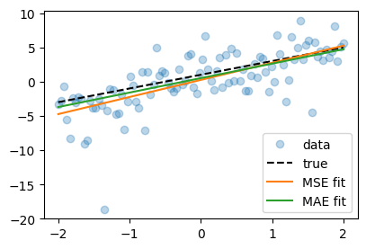

torch.manual_seed(17)
x = torch.linspace(-2, 2,100).reshape(-1, 1)
eps = torch.distributions.Laplace(0.0,2).sample((100, 1))
y = 2*x + 1 + epsA5: 손실함수의 선택
손실함수의 선택
A. 손실함수 선택 룰
- 아래의 도표로 충분할까?
| \(y\) | 분포가정 | 마지막층의 활성화함수 | 손실함수 |
|---|---|---|---|
| 3.45, 4.43, … (연속형) | 정규분포 | None (or Identity) | MSE |
| 0 or 1 | 이항분포 with \(n=1\) (=베르누이) | Sigmoid | BCE |
| [0,0,1], [0,1,0], [1,0,0] | 다항분포 with \(n=1\) | Softmax | Cross Entropy |
B. 로버스트 회귀
- 아래의 모형을 가정하고 시뮬레이션으로 데이터를 얻자. (박혜원모드X, 신모드O)
\[\quad y_i = 2 x_i + 1 + \epsilon_i,\quad \epsilon_i \sim \text{Laplace}(0,\,b)\]
- 데이터 생성
plt.plot(x, y, 'o')
plt.plot(x, 2*x + 1, '--r')[<matplotlib.lines.Line2D at 0x12d3480a0>]
- MSE로 학습 (일반 회귀)
torch.manual_seed(1)
net_mse = torch.nn.Sequential(
torch.nn.Linear(1,1)
)
loss_fn = torch.nn.MSELoss()
optimizr = torch.optim.Adam(net_mse.parameters(),lr=0.1)
#---#
for epoc in range(1000):
## step1
yhat = net_mse(x)
## step2
loss = loss_fn(yhat,y)
## step3
loss.backward()
## step4
optimizr.step()
optimizr.zero_grad()- MAE로 학습 (로버스트 회귀)
torch.manual_seed(1)
net_mae = torch.nn.Sequential(
torch.nn.Linear(1,1)
)
loss_fn = torch.nn.L1Loss()
optimizr = torch.optim.Adam(net_mae.parameters(),lr=0.1)
#---#
for epoc in range(1000):
## step1
yhat = net_mae(x)
## step2
loss = loss_fn(yhat,y)
## step3
loss.backward()
## step4
optimizr.step()
optimizr.zero_grad()- 결과 비교
plt.plot(x, y, 'o', alpha=0.3, label='data')
plt.plot(x, 2*x + 1, '--', color='k', label='true')
plt.plot(x, net_mse(x).data, '-', color='C1', label='MSE fit')
plt.plot(x, net_mae(x).data, '-', color='C2', label='MAE fit')
plt.legend()<matplotlib.legend.Legend at 0x12d1e9de0>
- 일반적으로 이러한 상황에서는 MAE가 더 좋다고 알려져있다.
- 따라서 표를 업데이트하면 아래와 같이 할 수 있겠다
| \(y\) | 분포가정 | 마지막층의 활성화함수 | 손실함수 |
|---|---|---|---|
| 3.45, 4.43, … (연속형) | 정규분포 | None (or Identity) | MSE |
| 0 or 1 | 이항분포 \(B(1,p)\) (=베르누이) | Sigmoid | BCE |
| [0,0,1], [0,1,0], [1,0,0] | 다항분포 \(M(1,{\bf p})\) | Softmax | Cross Entropy |
| 3.45, 4.43, … (연속형) | 라플라스분포 | None (or Identity) | MAE |
C. 정리
- 이를 특별히 로버스트회귀라고 부름.
- 잘 살펴보면 net의 아키텍처는 동일하다. 다른점이 있다면 오차항차이. \(\Rightarrow\) 통계학과에서 모델링은 net의 아키텍처뿐 아니라 오차항의 분포까지 모두 고려하는 보다 섬세한 개념임.
- 그렇다면 손실함수는 어떻게?? 보통 “손실함수는 음의로그가능도(Negative Log Likelihood, NLL)로 잡으세요” 라고 가르치는게 안전하다.
- 회귀: -로그가능도(NLL)를 계산하면 MSELoss와 식이 같아진다.
- 로지스틱: -로그가능도(NLL)를 계산하면 BCELoss와 식이 같아진다.
- 로버스트회귀: -로그가능도(NLL)를 계산하면 L1Loss와 식이 같아진다.
- 그런데 꼭 손실함수를 NLL로 잡지 않는 경우도 있다. (살짝 깊은 이야기)
- 실무적으로는 대~~~~~충 아래와 같이 잡으면된다.
| \(y\) | 마지막층의 활성화함수 | 손실함수 |
|---|---|---|
| 3.45, 4.43, … | None (or Identity) | MSE |
| 0 or 1 | Sigmoid | BCE |
| [0,0,1], [0,1,0], [1,0,0] | Softmax | Cross Entropy |
- 그런데 손실함수의 선택은 손실함수의 convexity가 아주 큰 영향을 주는것 아니었어?
- 로지스틱문제에서 왜 손실을 MSE가 아니고 BCE로 잡았느냐? 에 대한 대답으로 “손실을 그렇게 잡으면 \(\hat{w}_0,\hat{w}_1\)에 대한 convex가 되지 않는걸요?” 라고 설명했다. 이는 그 문제에서만 맞는 설명. 더 정확하게는 MLE를 이해해야함.
- 실제로 스펙의 역설과 같은 상황에서는 손실함수가 더 이상 convex가 아님.. \(\to\) 여기서부터는 최적화테크닉이 활약하는 시간